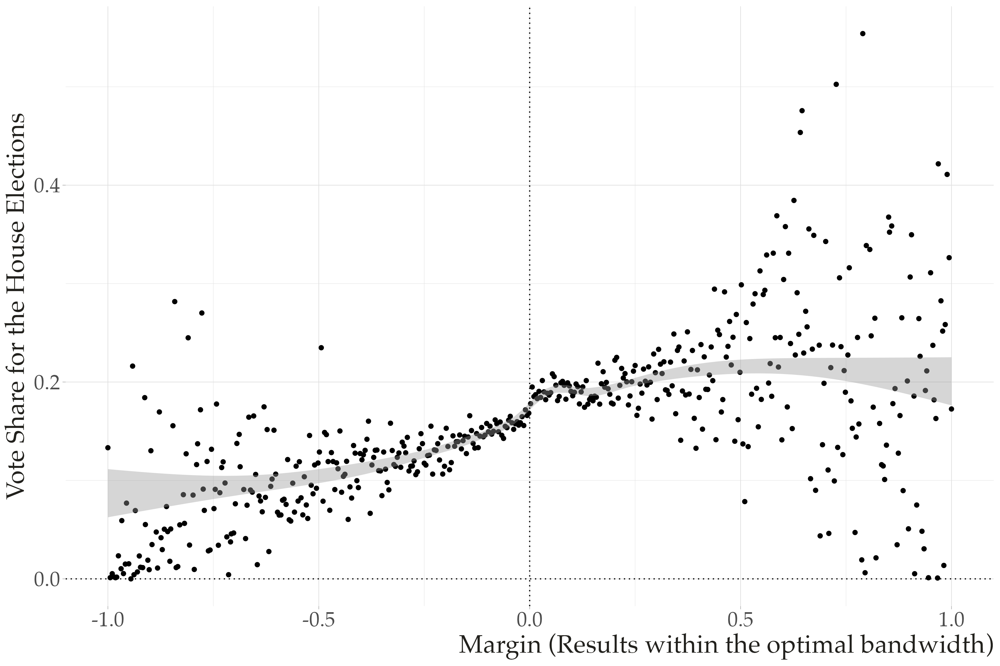

PPOL 5203 - Data Science I: Foundations
Week 7: Joining, Tidying and Visualizing Data
Where we are…
We started with the basics of being a data scientist
We moved over to the primitives of Python as your main DS tool
Then we started our journey working with tabular data:
Numpy for matrices
Pandas for heterogeneous dataframes
Pandas Data Wrangling Methods
Plans for Today
Go over quickly through the mid-semester survey
Joining and Tidying Data
Data Visualization: Principles and Practice
Mid-Semester Survey
Start Doing
“More in class exercises”
“More practice during class!”
“I was going to say maybe more in-class exercises but it sounds like that’s where we’re heading!”
“Hold a lab” – sorry, not on me!
Mid-Semester Survey
Stop Doing
Mostly “NAs” – Great!
More short breaks instead of a long break
Mid-Semester Survey
Stop Doing
Mostly “NAs” – Great!
More short breaks instead of a long break
Mid-Semester Survey
Continue Doing
In class exercise
Comparison between Python and R
“more in-class assignments - we are already started and I like that. And of course, the break in between helps too.”
Readings for this week are very important!!
Pandas Notebook Join and Tidy
Data Visualization
TLDR
Visualization matters! A figure is almost always better than a table
You have a full-semester ahead of you for Data Visualization
Here -> cover the basics.
focus more on grammar of graphics and
plotnine- a ggplot2 implementation in Pythonskimp through native Python libraries (
matplotlibandseaborn)
What do you see?
How many variables?
How are these variables represented in the figure?
What are the non-data related information presented in the graph?
Aesthetics
The key aspect on data visualization is to take data points and convert them visual elements.
All data visualizations map data values into quantifiable features of the resulting graphic. We refer to these features as aesthetics. Fundamentals of Data Visualization, Claus Wilke

Cartesian coordinates system: 2d

More dimensions
We often want map more variables into the graph. We do this exploring new aesthetics.

Color Aesthetics to Distinguish

Color Aesthetics to Highlight
To represent visually a sequence of data points

Grammar of Graphics
Grammar: set of structural rules that dictate how words in a language can be combined to form meaningful sentences.
Grammar of Graphics: brings a similar effort to establish structural rules to data visualizations
Implementation:
ggplot2in Rplotninein Python
Major Components of the Grammar of Graphics
plotnine/ggplot2 graphs have three key steps
Data Step: The raw data that you want to plot.
Geometries step: The geometric shapes that will represent the data.
Aesthetics <aes()> step: Aesthetics of the geometric and statistical objects, such as position, color, size, shape, and transparency
Additional Components of the Grammar of Graphics:
Facets: to produce create subplots based on specific variable
annotations: labels, titles, subtitles, captions.
Coordinates & Scales: some additional functions to adjust aesthetics you are mapping (change colors, size, alpha, scale of x and y coordinates)
- Theme: Control the finer presentation details like font size, background color, grid line styles, etc.Gapminder
import pandas as pd
import numpy as np
from plotnine import * # to imitate ggplot
from gapminder import gapminder # bring data
import warnings
warnings.filterwarnings('ignore') # Ignore warnings
# create to new log variables
gapminder = (gapminder
.assign(lngdpPercap = np.log(gapminder["gdpPercap"]),
lnpop = np.log(gapminder["pop"]))
)
ggplot (data = <DATA>)
+
geom_<representation> (aes (<aesthethics>) )
# build in plotnine graph
# step 1: data
(
ggplot(data=gapminder) +
# step 2: geom
geom_point(
# step 3: aesthethics
aes(x="lngdpPercap", y="lifeExp"))
)<Figure Size: (1280 x 960)>